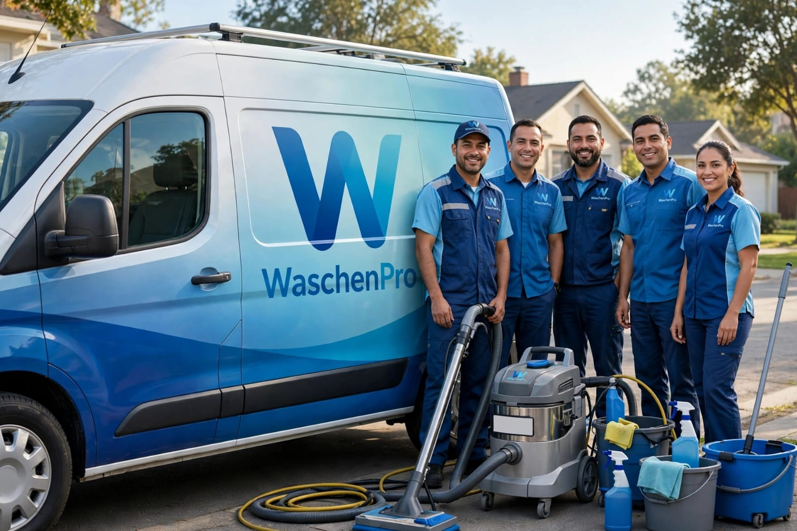

Limpieza profunda pensada para familias con niños y mascotas. Eliminamos manchas, olores y ácaros con productos seguros para todo tu hogar.
Solicitar una cotización

Tratamiento profundo para telas y cueros, eliminando manchas y malos olores.

Eliminamos ácaros, polvo y manchas para un descanso más saludable.

Ideal para hogares con niños y mascotas, con productos seguros y efectivos.

En WaschenPro sabemos que tu hogar es donde vive tu familia. Por eso ofrecemos un servicio de limpieza confiable, puntual y pensado especialmente para departamentos con niños y mascotas.
Cuéntanos qué necesitas y te enviamos una cotización sin compromiso.
WhatsApp: +51 930 602 398
Correo: contacto@waschenpro.com